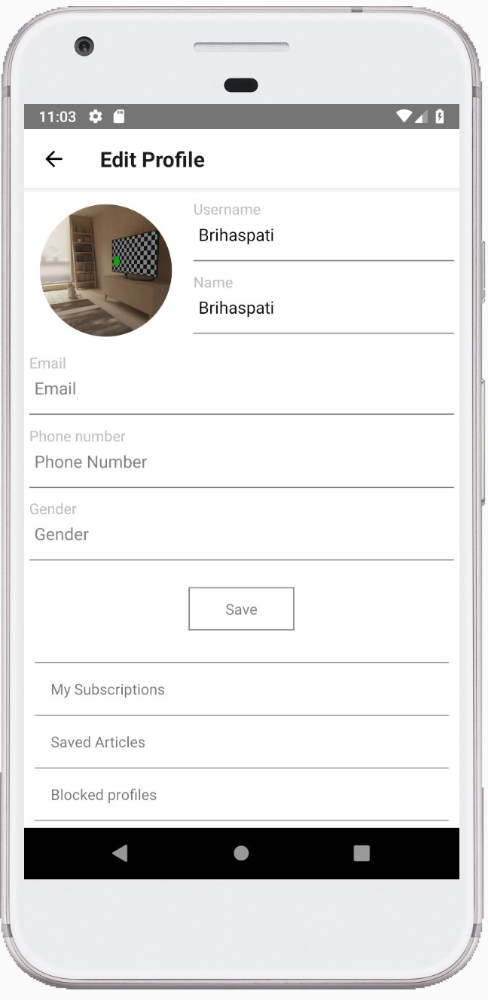
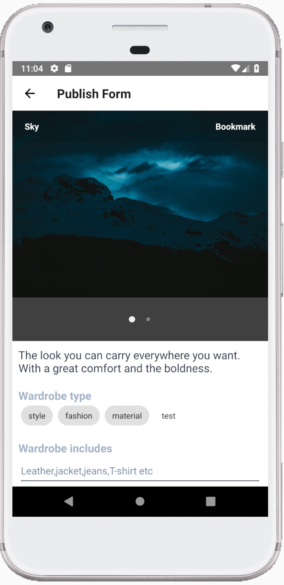

ESS layout

Admin layout

Monolithic Artitecture

Monolithic


Disadvantages of Monolithics arti.
What is Microfrontend?

Advantages of Microfrontend
Agenda
Challenges we have in frontend
Flexibility
Upgrading Framework
Refactoring code
import {Component, OnInit} from '@angular/core';
import {Store} from '@ngrx/store';
import {FormGroup} from '@angular/forms';
import {LoginForm} from '../../../../app/core/models/LoginForm';
import {AppState} from '../../../../app/core/store/reducers/index';
import {LoginAction} from '../../../../app/core/store/actions/user/LoginAction';
@Component({
selector: 'gt-login-form',
templateUrl: 'gt-login-form.component.html',
styleUrls: ['gt-login-form.component.scss']
})
export class GtLoginFormComponent implements OnInit {
public model: LoginForm;
constructor(private store: Store) {
}
public ngOnInit() {
this.model = {
username: '',
password: '',
valid: false
};
}
public onSubmit(loginForm: FormGroup) {
this.model.valid = loginForm.valid;
this.store.dispatch(new LoginAction(this.model));
}
}
Performance
Testing
Code consistency, Coding standard
Resilence
What is Microfrontend?
Benefits of Microfrontend
Better Maintenance
High Resilience
Highly Scalable
Simple, decoupled codebases
Flexibility in Using Technologies
Improved Productivity and Speed
We Code 💻💻🎧🎧! a.k.a We develop apps 💻📱
What are we good at?
Our Skills
- React and React Native ⚛️
- Angular, Vue, Elm, Svelte, Mithril, Nodejs, Hapijs, Expressjs, Elixir
- Platforms 🖥️📱 - Web and Mobile(IOS/Android)
- End to end solutions - Dev to Deployment
How do we approach a project?
Our Approach
- You ask us to develop an application for you!
- We say sure 🙂, Absolutely!
- We ask you to provide us the design
- We do a research on the design provided
- We propose an architecture and tools that suits the design
- You review and approve of the same 🤝🤝
Our Approach
- We start coding 💻🎧!
- We provide biweekly updates on the progress
- We ship the product
- We handover the code along with documentation and KT
- We thank you for working with us 🙂
Why React Native? Why not something else?
RN/Flutter Comparison
| Parameter | React Native | Flutter |
|---|---|---|
| Programming Language | Javascript | Dart |
| Learnig Curve | Less | More |
| Development Time | Less | More |
| Maturity | More - 2015, 3 years in the market | Less - 2017 |
| Usage | Walmart, AirBnb, Wix, Uber | Alibaba, Tencent, |
RN/Flutter Comparison
| Parameter | React Native | Flutter |
|---|---|---|
| Developer experience | Very good | not so good |
| Ecosystem/Community | Large and Inclusive | Small and less inclusive |
| Github Stars(popularity) | 78704 | 69039 |
| Github Issues | 542 | 5000+ |
| Performance | Both on similar level | Both on similar level |
What we keep in mind(Considerations)
We pay very close attention to
- Domain Driven Design
- Setup/Starter Kits
- Application Navigation
- Application Storage
- Application Security
- Unit Testing
- Bug/Crash Reporting
- Deployment/CI/CD
- Best coding practices
Example tools we consider for the project
Glimpse - Tools/Libraries
- Setting up - React Native CLI/Expo CLI/Ignite CLI
- Navigation - React Navigation/React Native Navigation
- Application State - Redux
- Testing - Jest/Enzyme/Detox
- Error/Crash Reporting - Bugsnag/Instabug/Sentry
- CI/CD - Visual Studio App Center
- Deployment - Codepush/Fastlane
Our coding practices
Some of our coding Practices
- We go with both Android/IOS from the beginning
- We try to keep a minimal amount of libraries
- Very careful on directory structure - Ducks pattern(feature first) for medium/large apps
- Seperation of Smart(Data) and Dumb(UI) components
- We break down components into small functional ones
- We try to use directory resolutions
Few more!
- No nested ternaries!
- We think about styling from beginning of the app
- Lock dependencies to prevent breaking changes
- Unit testing components, we try TDD! depends on project deadline
- Strict peer review/merging strategies
- We always keep an eye on best practices around the ecosystem
Tools we use for project management
Tools - Project Management
- PM - Trello
- Communication - Gmail 📧, Hangouts
- Repository - Github/Bitbucket
- Development - VSCode/Android Studio/XCode
Our Assumptions
We Assume
- You provide us the design
- You give the minimum version numbers for IOS/Android
- We own the repo until its matured
- We give code walkthrough periodically
We Assume
- You manage subscriptions of integrations - SMS/Email/Error Reporting
- You provide the Apple/Google developer accounts
- You handle the physical device testing in multiple devices before production
- Very importantly, you BELIEVE IN us!
Why Us?
Why Us?
- Trust - Because you know us! 🤝❤️
- We produce quality code
- Communication 📞 is easy between us, as we know each other
- Our team is a group of trusted, matured developers
- We are good at getting the job done 🙂
Screenshots of the app we are working on
Samples
Samples
 What's Behind - Tools
- React Native CLI
- Backend - Elixir
- Navigatoin - React Navigation
- App State/Storage - Redux/AsyncStorage
- Testing - Jest